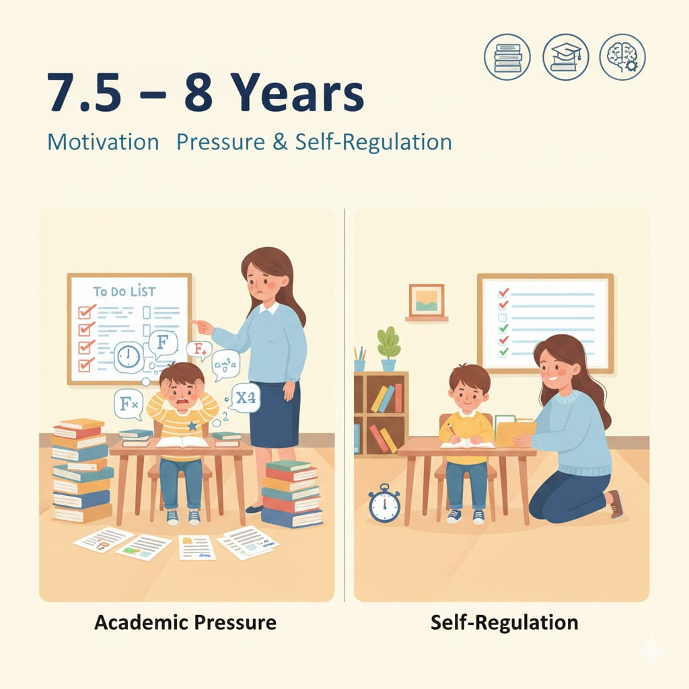

7.5 – 8 سنوات
في السن ده يبدأ الضغط الدراسي يزيد، ويظهر مفهوم "المنافسة" بوضوح. الطفل يحتاج مهارات تنظيم ذاتي وإدارة وقت عشان ما يتحول الضغط لقلق مزمن.

مهم: في المرحلة دي الطفل يتعلم كيف ينظم نفسه مش بس
ينفذ أوامر.
في السن ده يبدأ الضغط الدراسي يزيد، ويظهر مفهوم "المنافسة" بوضوح. الطفل يحتاج مهارات تنظيم ذاتي وإدارة وقت عشان ما يتحول الضغط لقلق مزمن.
